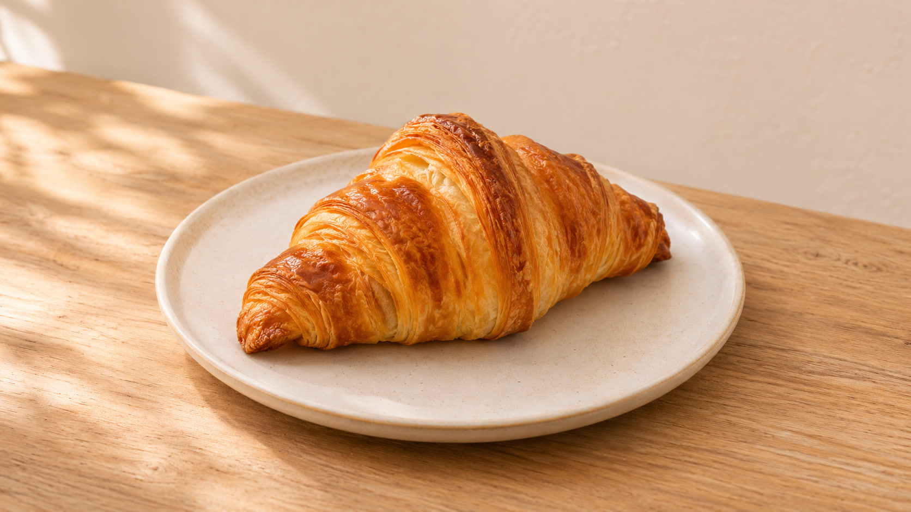
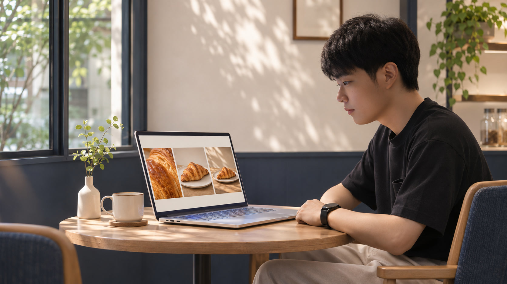
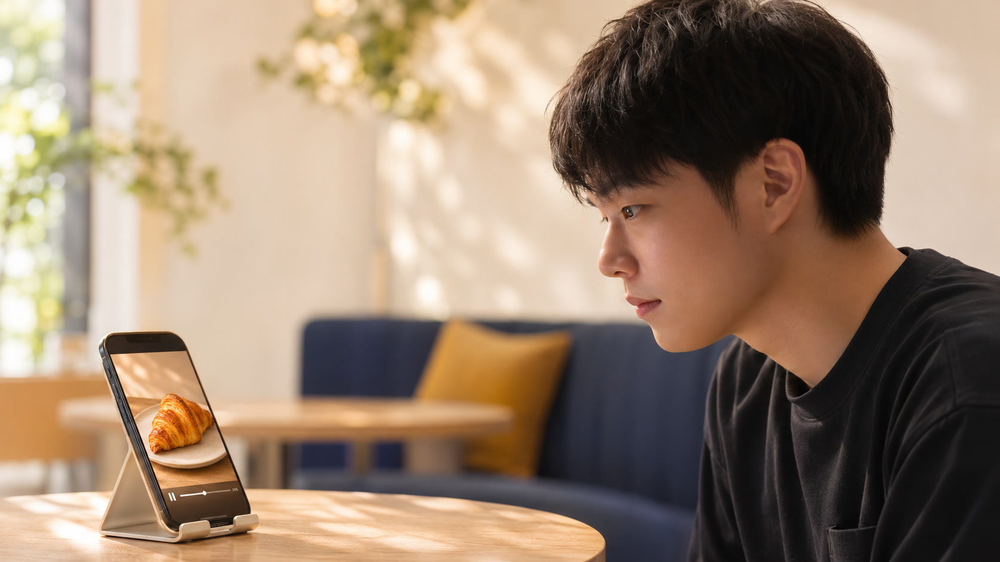

0〜3秒質感に寄るゆっくり横へ
3〜7秒全体を見せるなめらかに引く
7〜10秒余白で締める最後は静かに止める
絵コンテを動かした10秒見本。質感→全体→余白の順で、1個の商品を見せます。
今回はクロワッサンで練習します。写真を1枚用意して、構成はChatGPT、動画化はGeminiに任せてみましょう。

商品全体を入れる
明るい場所で撮る
余計な物を避ける
自分の商品写真を使うか、まずは下の練習写真で進めてください。ChatGPTの入力欄の「＋」から写真を選びます。
練習用の商品写真を保存練習用に作成した商品画像です。実在する店舗の商品情報は含みません。
写真を添付でき、画像を作成できるChatGPTを使います。利用上限はアカウントで確認してください。Geminiの動画生成にはGoogle AIプラン等の利用条件があります。「動画を作成」が見えることを先に確認すると、途中で止まりにくくなります。
同じ写真を使った絵コンテの見本。AIの画像でも、商品の数と形が変わっていないかを見ます。
写真と一緒に、下の指示文を送ります。自分の商品では「商品」「用途」「雰囲気」を差し替えてください。
この商品写真を分析して、プロのデザイナーが作るような10秒の商品プロモーション動画の絵コンテを、画像で作ってください。 【今回の目的】 写真の商品の見た目を、短い動画で魅力的に伝える。 【商品】クロワッサン 【用途】お店のSNSに載せる紹介動画の練習 【画面】横長16:9 【雰囲気】自然光、温かい色、清潔なカフェ ・0〜3秒：表面の層に寄り、質感を見せる ・3〜7秒：ゆっくり引いて、商品全体を見せる ・7〜10秒：皿を含む構図で落ち着いて締める この3カットを、時間・カメラの動き・完成イメージが分かる1枚の絵コンテにしてください。 各カットの内容は短い文章でも添えてください。 商品の形・数・色を写真から変えず、見えない原材料や味、価格、実績を推測して追加しないでください。文字・ロゴ・人物は動画内に入れない想定です。テキストで保存

僕は、商品写真を送って絵コンテから考えてもらうやり方を勧めています。一からデザインを考え込むより、まず出てきた構成を見て、動画へ進めるからです。
文章だけなら「この構成を、3カットが並ぶ1枚の絵コンテ画像にしてください」と続けます。商品が変わったら、元写真を添付し直し「商品の形・色・数を維持して、構図だけ変えて」と伝えます。絵コンテは商品の情報を増やす場ではありません。
絵コンテができた会話に、下の変換指示を送ります。出てきた動画用プロンプトは、全文をコピーします。
今の絵コンテをもとに、Gemini Omniで動画にするためのプロンプトを1本にまとめてください。 元の商品写真をGeminiにも添付します。絵コンテの画像そのものを動かす指示ではなく、元の写真の商品を映す動画の指示にしてください。 10秒、横長16:9。0〜3秒、3〜7秒、7〜10秒の順番と、それぞれのカメラの動きを保ってください。 商品の形・数・色と皿を維持し、別の商品・手・人物・文字・ロゴを追加しないでください。音声はなし。写真から判断できない商品情報は書かないでください。 回答は、Geminiへそのまま貼れるプロンプト本文だけにしてください。テキストで保存
練習写真には、この完成プロンプトも使えます。自分の商品では、絵コンテから作り直してください。
添付した写真のクロワッサンを主役に、10秒の実写調の商品プロモーション動画を作成してください。横長16:9。温かい自然光が入る清潔なカフェ、淡い背景と木のテーブルを保ちます。 0〜3秒：クロワッサン表面の層に寄った接写。ゆっくり横へ動き、薄い層の質感を見せます。 3〜7秒：なめらかに少し引き、白い皿の上にあるクロワッサン全体を見せます。 7〜10秒：皿を含む余白のある構図に移り、最後の1秒は静かに止めて締めます。 全カットで、写真と同じ1個のクロワッサンの形・焼き色・層、白い皿を維持してください。商品を変形・増殖させず、余計な具材・湯気・包装・文字・ロゴ・手・人物を追加しないでください。音声はなし。商品の見た目だけを伝え、原材料・価格・味・品質に関する文字や説明は入れないでください。テキストで保存
元写真を添付するのは、商品の見た目を渡すためです。複数のコマが並ぶ絵コンテ画像を、そのまま動かす指示にしないようにします。
Geminiを開く ↗
僕が試したときは、約10分。半分以上はAIの回答を待っていただけでした。全部を自分で作業する前提を変えると、スマホからでも試しやすいと感じています。
僕のときの一例です。待ち時間や修正の量で、かかる時間は変わります。
1個のままか
形や色が変わらないか
3カットの順番があるか
崩れた秒数と、変えたくない条件を一緒に伝えます。修正後も最初から最後まで再生し、音を付けた場合は音も聞いて確認してください。
形が変わった場合の記入例です。実際の問題に合わせて【直したい箇所】を替えます。
いま生成した動画を修正してください。 【直したい箇所】3〜7秒でクロワッサンの形が元の写真から変わっている箇所 【残すもの】10秒、横長16:9、温かい自然光、接写→全体→余白のある締めの順番 【変更】元の写真と同じクロワッサン1個、同じ焼き色・層・白い皿を保ってください。商品の形は変えず、カメラの動きだけにしてください。余計な商品や手を追加しないでください。 音声・文字・ロゴは追加しないでください。テキストで保存
保存したMP4を「写真」または「ファイル」から開き、10秒の流れを再確認します。ChatGPTの絵コンテも画像を開いて保存し、元写真と一緒に残しておきましょう。
練習作を1本作ったら、用途・納期・修正範囲・AI生成の使用を相手と確認する準備へ進めます。
依頼前にそろえる確認メモを保存このガイド／商品写真／絵コンテ見本／10秒の構成見本／コピー用指示文4種／依頼確認メモ
練習セットをダウンロード（ZIP）ZIPを展開し、guide.htmlをブラウザで開きます。ガイドと素材はオフラインで見られます。ChatGPT・Geminiでの生成にはインターネット接続が必要です。
商品動画の作り方を試したら、次はAIを使った副業全体の進め方も整理してみてください。すみっちの公式LINEで「AIマネタイズの教科書」を受け取れます。
 公式LINEで教科書を受け取る ↗
公式LINEで教科書を受け取る ↗